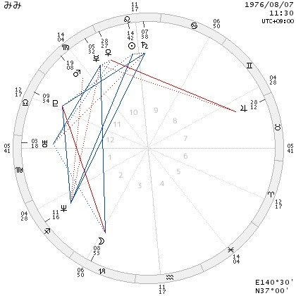

| アストロヒプノ ― 魂のホロスコープ ― （占星術と前世体験から学ぶ魂の話） ユフネのアストロヒプノ | |
| ユフネ | |
| UNKNOWN (2013) | |
astrological × hypno
ー魂のホロスコープー
占星術と退行催眠・前世体験から学ぶ
魂の話
占星術師 ユフネ （著）
Copyright© youfne All Rights Reserved.
・毎回希望した「ホロスコープのつながり」と関わる前世の旅となるか？
私は「占星術（ホロスコープ）」と「前世」につながりがあるのではないかと占星術師として考えていた時期がありました。
そんな私が、いつの間にか前世ヒプノセラピストとして活動するようになり、クライアントさんを通して本当に「前世」が「ホロスコープ」に現れることを発見することとなりました。
この本にはその研究報告をレポートのようにまとめています。
この本には、クライアントさん自身が催眠状態（深い意識レベル）で見た前世と、生まれ持ったホロスコープ、「前世」と「ホロスコープ」、この２つの間には大きなつながりがあるということ、そして、それが何を意味しているのかということについて私の考えをまとめられています。
クライアントさん自身が実際に前世ヒプノセラピーで体験した「前世の人生」を、占星術師（この本では私、ユフネ）が今世生まれ持った星配置「ホロスコープ」に何か前世の印を残しているか調べ、ホロスコープ上に前世の印を発見したという研究の成果がこの本には書かれています。
占星術的視点から「前世的につながりがあるのでは？」といった思考の流れ（「ホロスコープを見て」⇒「前世を占星術師が考える」）ではないところに特徴があります。
私たち前世ヒプノセラピストは、クライアントさんが見る前世をコントロールすることはできません。
純粋に催眠状態でクライアントさん自身が見た前世から、ホロスコープを見つめると、「前世」と「ホロスコープ」そこには大きなつながりがあったということを、私（ユフネ）は今回この本でお伝えします。
それを知ったときに「だから何？」という人もいるかもしれません。
「ヒプノ（退行催眠）で前世を見ろということなのか？」「ホロスコープ（占星術）を読めということなのか？」
あなたはそう聞くかもしれません。
もちろん、私はそのどちらもオススメします。
前世を知ることも、ホロスコープを読むことも、「あなたを知る」ことにつながり、それはあなたの人生を豊かにするのですから。
ただ、私がこの本で本当にお伝えしたいのは、生まれもったものを決めてこの世に来ていること、ホロスコープに前世・今世・来世の情報がつまっているということ、そして、前世も今世も未来世もがホロスコープに描かれていると理解すること。それは、あなたは前世も今世も来世ともすべてつながっていて、あなたの人生の中に、そう、この今世の中に前世も未来も備わっているのだということです。
ホロスコープの中に、すべてがつまっている。
前世も未来世もホロスコープに描かれている。
つまり、今のあなたの中にすべてがある。
そう私は思います。
今のあなたの中にすべてがある、それは、あなたが今世をキチンと生きること、そしてあなたが「今」感じる思いを行動にうつし実現させることで、前世の思いも未来世の思いも達成できるということを意味するでしょう。
「前世の思いも未来世の思いも達成できる」
この言葉を理解するのは、少し時間がかかるかもしれません。
今を生きることが、前世にも未来世にも影響し、それが今世に跳ね返ってくる。
すべてはつながっている。
私は、占星術とヒプノセラピーを組み合わせた手法を「astrological hypno（アストロヒプノ）」と名づけました。
占星術師であり、ヒプノセラピストであるからこそ導き出せた手法です。
そして、私は占星術とヒプノセラピーを組み合わせた「astrological hypno（アストロヒプノ）」のセラピーを通して、「ホロスコープには、前世、今世、未来世が描かれている、そして、今の人生にすべてがあらわれる」ことを理解することになりました。
この本はその発見のプロセスが書かれています。
私たちは、前世と今世と未来世を生きている。
いまこのフレーズを読んで理解できないと感じる人も、この本を読み進めるなかで私がお伝えしたいことを感じとってくださるだろうと思います。
私たちは、前世を知らなくても、ホロスコープを知らなくても、私たち自身を生きています。
あなたは、前世を知らなくても、ホロスコープを知らなくても、あなた自身を生きています。
あなたの今の人生の中に喜びがあり幸せがあるのであれば、生まれ持ったもの（生まれ持った星）をストレートに表現できている結果なのでしょう。前世も未来世も調整統合され、前世のあなた、そして未来世のあなたから喜ばれ感謝されながら、それぞれの人生がお互いに応援しサポートし合った関係となっているのです。
もし、あなたの人生の今の中に苦しみや痛みがあるのであれば、それは今世において何かムリをしているのかもしれないし、あなた自身を表現できていないのかもしれません。それは、前世でも未来世でも繰り返していることかもしれないし、今世繰り返すのであれば、前世の後悔や未来世の苦悩も引き続き背負うことになるのかもしれません。
つまり、ホロスコープに前世といった時間を超えたあなたの情報が入っていることを知ることは、今世のあなたの中に前世や未来世の一部があり、今世のあなたの使命や生まれ持った資質を「今」生きることが、時間を超えた前世や未来世のあなた自身を満足させることにつながり、より今世のあなたを前進させることだとお伝えしたいのです。
本書には、私が前世とホロスコープ（占星術）には明らかにつながりがあると考えるようになった経緯、発見した経緯が書かれています。そして、そこから何が導き出されたか私の意見を述べています。このストーリーを今この本を読んでくださっているあなたにトレースしていただくことで、すべてがつながっていると気づいた私の発見の感動を、あなたにも一緒に感じてもらえるのではないかと考えています。
ホロスコープには、あなたの過去・現在・未来がつまっている。
生まれ持った星はあなたの財産であり、あなたたち（あなたの前世の人々・あなの未来世の人々）の記憶を共有していることを示しています。
何度も繰り返しますが、それは生まれ持った資質を、今どう活かして生きるか？ということがいかに重要かということを示してくれています。
私のカウンセリングやセラピーの中で、前世ヒプノセラピーをしても、ホロスコープ（占星術）セッションをしても、ほとんどの相談者（クライアントさん）が、「私はコレをしたいと思っていたけど、それで良かったんだ！」といって自分自身にOKを出して笑顔で帰られることが多いです。
つまり、クライアントさん本人はすでにどこに向かったらいいのか何をしたらいいのかをわかっているのです。
確認作業ということですから、「当然あなたがそうしたいと思ったものはOKです」という回答が、前世でも占星術（ホロスコープ）からも導き出されます。
私は、セラピーやセッションをする度に、「あなた自身がわかっていたことを確認するお手伝い」をさせていいただけて嬉しいと感じます。
たまに「もう！あなたがわかってることじゃん！」と思うこともあります。
（もちろん、セラピーやセッションで会いに来てくださることは、本当に嬉しいのですょ＾＾）
私が最終的にこの本でお伝えしたいことは
あなたが「こうしたい」と感じることは、実は前世からも、生まれ持ったものからもすべてOKが出ているのだということです。
私は将来は占星術師もセラピストもいなくなるのではないかな？と思っています。
その理由は、すべての人が自信をもって「こうなりたい」「こうしたい」と内なる声に素直に生きることができる未来があると思うからです。
そして、前世にも未来世にもその人自身がアクセスできる時代、生まれもった星を各自が理解する時代がやってくると思うのです（言いすぎでしょうか？）。
そのために、私たち現在の占星術師やヒプノセラピストは、その（今を生きることが、前世や来世のあなたのためになるということの）後押しをするような実例や実証をお伝えしていく使命があるのではないか？と考えています。
もちろん、確認作業も大切ですし、私のセッションによって「背中を押してもらった」と感謝してくださる方はたくさんいます。
すべての人が内なる声に素直に動けるその日まで、私はみなさんのお手伝いができるよう占星術師、ヒプノセラピストとしてできることにチャレンジしたいと考えています。
占星術と前世について関連があるのではないかと度々クライアントさんを鑑定する中で感じることがありました。ただ、前世のあるなしや、本当かどうかといった微妙なラインに踏み込むにはあまりにも課題が壮大すぎると感じ、私はいつの間にかその話題から遠のいていました。
私は、占星術師としてクライアントさんのホロスコープ（生まれ持った星の配置）を日々みて、ホロスコープからその人の生まれ持った使命や才能、資質を読みといています。その人にとって特定の能力があり、だからこそこの世に生まれてきていると感じることがたくさんありました。
前世とホロスコープのつながりについて言えば、個人の才能は過去から持ち越されているだろうと考えることはあったとしても証明するものがないため、それほど気にとめていませんでした。
ただ、相性を読むときなどAさんとBさんのホロスコープを組み合わせるとき、明らかにそれぞれがもつ星が絡み合いすぎている場合など、前世での縁を自然と感じることがありました。
例をあげるとしたら、占星術で用いる10天体のうち、7天体が重なっているといった相性です。（例えば、土星と月、太陽と木星、金星と火星、水星と水星などが一緒の場所にある、コンジャンクションしているなど）
そんな組み合わせを見たとき私は、「もしかしたら、この2人（相性）は前世からのつながりがあるのかもしれない」とぼんやりと思うのでした。実際に、結婚している人や、その相手に片思いしている人、不倫関係にある人など今まで見てきた中で本当にたくさんのパターンがありました。
７つも天体が重なると、私も、信じられないほどびっくりするのですが、こういう組み合わせを持つ人は私が見てきた中でもそれほど少なくありません。ですから、3つや4つの星が同じ場所にあるということはわりと起こるのです。
「もし前世があるのなら、2人はとても深い関係にあっただろう」と私の中で解釈することが多かったのですが、しばらくの間、それを確かめようとはしませんでした。それは、私がその方法に気づかなかったからです。
そのように占星術師を続けている中で、ふと「退行催眠前世セラピー」を勉強する機会に恵まれました。なぜ突然そのようなきっかけを得たのか覚えていません。もともと興味があって、簡単に習う機会もあったのですが、それ以上深入りすることはなく、キョロキョロと探していたときに私は偶然チャンスをつかんだのです。
前世療法の書籍に、 「魂の伴侶」 ―ソウルメイト 傷ついた人生をいやす生まれ変わりの旅 ブライアン・L. ワイス (著) という有名な本があります。
私はその本をかなりの昔（占星術をはじめる以前）に紹介され、購入したもののまったく読み進めることができない時期がありました（10年もの期間だったと思います）。活字が苦手ということもあるのでしょうが、そのような世界にあまりにもなじみがなく、読み進めることができなかったのだと思います。
「退行催眠前世セラピー」を勉強するにはそれなりのお金がかかります。ですので、基本ともいえるこの本（ 「魂の伴侶」 ）を本棚の奥から引っ張りだしてもう一度読んでみようと私は思いました。
すると、占星術を勉強する以前に本を開いた10年前の感覚とはまったく別のものを感じている私がいたのです。するすると読み進めることができ、1日で読破し「なんておもしろい本なんだろう」と感動しました。
はじめにこの本（ 「魂の伴侶」 ）を手にとった10年前の私には、まだ準備ができていなかったのだと思います。それから夢中になって退行催眠・前世ヒプノセラピーの勉強を進めました。
私のベースには「占星術」という知識が流れています。ですから、退行催眠のお勉強、前世ヒプノセラピーをスタートさせるにあたって、占星術と切り離すことはありませんでした。占星術とあわせて考える癖がただついていただけともいえるでしょう。
その身についた自然な癖が、占星術と前世のつながりを発見するきっかけとなりました。
前世ヒプノを身につける練習にとAさんに前世セラピーをさせてもらうことになりました。
退行催眠の勉強をはじめて、かなり早い段階のときだったと記憶しています。
彼女はAさんといいます。
Aさんは退行催眠状態になりやすく、すんなりと前世の中に導かれていきました
子供のころの食事のシーンです
私が
「テーブルには誰がいますか？」
と聞くと
「父と母、祖母、そして隣に弟がいます」
とAさんが答えました。
彼女は前世でも女性として生まれました。
そして、旦那さんをもって幸せに過ごします。
そのような穏やかな前世の話が続きました。
「少し時間を進めて、あなたが40代の時代に移動します」
私がそう語りかけました。
私は、この前世はゆったり幸せに過ごす人生なのだろうと思ったのです。
ところが、「40代へ」と私が彼女に声をかけたとたん、彼女は泣き出したのです。そして言います。
「弟が」
声が震えて聞き取れません。
「弟を助けにいかなくてはいけない」
そして力強く彼女が言いました。
それは非常事態の中である決心をしたような口調でした。
その前世の中で弟さんと何か大きな事件があったのです。弟さんは病気で動けなくなり、Aさんの前世の人（彼女）が助けるしかありませんでした。Aさんの前世の人は大切な家族をおいて家を出る決断をします。
結局、この前世の中で、Aさんの前世は弟さんとの絆を体験するという確認をしました。
そして、今世のAさん、彼女に戻ってきてもらい、体験した前世をシェアしてもらいました。
彼女Aさんが
「あの（前世）弟は、私の（今世）息子だった」
と語ったのです。
実は、退行催眠前世セラピーでは、このようなことは頻繁に起こります。先ほど紹介した本（「魂の伴侶」ブライアン・L. ワイス (著)）にも、そのようなことが書いてあります。そして、あなたが前世に興味をもって、前世セラピーや退行催眠の本を集めて読んでみると、そこで紹介される体験談の中にたくさんの魂のつながりを知ることになるはずです。
例えば、
・別れた旦那は前世の恋人
・息子は前世の弟だった
・前世の旦那が父だった
・前世の恋敵は実は母
・前世の旦那は今気になる人
前世の旦那さんが今の（過去の）恋人という例は、本当に多いです。前世のお兄さんの子供が、現在の自分の子供と旦那さんという縁もありました。
このように、前世や今世、魂をこえてつながりのある関係をソウルメイトと呼ぶことが多いようです。先ほどから何度も紹介している「魂の伴侶」―ソウルメイト 傷ついた人生をいやす生まれ変わりの旅 ブライアン・L. ワイス (著)では、そのつながりの深さが実例（実際のセラピー体験）を上げながら、非常に興味深く描かれています。
私も、本を読んで「そういうこともあるのかな」と思っていた程度だったのですが、クライアントさんにセッションをするたびに、これでもかというほど「ソウルメイト」の関係が明らかになるので、今では疑うこともなく自然になじんでしまっています。
Aさんのソウルメイトの話を聞いたときも、「ソウルメイト」って本当に多いんだなぁという印象でした。
そして、私にとって、Aさんの前世ヒプノセラピーの体験はソウルメイト発見の驚き以上の衝撃があったのです。
それは、占星術的な前世とのつながりの発見の驚きでした。
このAさんの前世セラピー終了後、私は自然な好奇心から、息子さんの生年月日を聞き、ホロスコープをつくったのです。
（彼女の生年月日はもともと知っていたため）
そのときの私の予想は「2人の生まれ持った月（ホロスコープ上の月の位置）に何か関係があるのではないか」でした。
その理由は後に書きますが、月は過去を意味し、母と子のつながりも月にあるからです。
そして、相性をみるために、ホロスコープ同士を掛け合わせて表示させたとき、震えるような発見がありました。
なんと
Aさんの月と、Aさんの息子さんの月がまったく同じ場所、ぴったりの度数にあったのです。
図Aさんの月と、Aさんの息子さんの月
AさんとAさんの息子さんは、月の度数がまったく同じ
（Aさんの月さそり座8度、Aさんの息子さんさそり座6度、正確には、Aさん7.51度、Aさんの息子さん7.59度）
※同じ位置に月がある人同士が必ず前世で縁があるということではありませんので、ご注意ください。ただ、まったくありえないということではなく、その可能性が極めて高いことになります。
※ポイントとして、月が同じサイン（星座）というだけでなく、ほぼ同じ度数（オーブ範囲）であることが重要です。例えば、月がさそり座6度と月がさそり座7度など、どこまでのオーブをとるかはそれぞれの占星術師にゆだねられるでしょう
私は2人のホロスコープでもしかしたら月が同じような位置にあるかもしれないと予想を立ててホロスコープを出したのです。ですから、まったく同じ位置に月があったこと、ぴったりコンジャンクションだったことを発見したときの興奮は今でも忘れられません。
そのとき、「前世とホロスコープ」「前世と占星術」のつながりを発見し、世の中に広めて欲しいという何か見えない存在（サムシンググレートというのでしょうか）が働きかけてくれたように感じたのです。
この発見をする以前の私も、月が同じ場所にある（例えば、あなたの生まれたときの月のサインと度数、あなたの彼（彼女）の月のサインと度数が同じ）場合、「これは前世でのつながりがあるかもなぁ」と占星術的にリーディングしていました。実は、私（ユフネ）とまったく同じ月の度数をもつ古くからの友人がいて、彼女のホロスコープを見たときに「この子とは前世でも友達だったのかもしれない」と思った経験があったのも影響しています。
ただ、それは私の中に秘めた思いでクライアントさんに伝えることはありませんでした。前世でつながりがあると私がリーディングしても、クライアントさんに伝える際は「縁が深い」という言葉にとどめていたのです。
それが、このAさんの前世セラピーの体験から、「あぁ、星とのつながりは本当に表面化するし、それをAさん自身が前世として記憶しているんだ」と感じ、改めて占星術と前世のつながりに興味を持ったのです。
それ以降、私は占星術と前世には何かしらとても大きなつながりがあると確信します。そして、前世ヒプノによってクライアントさん自身が前世を体験した内容からつながりを検証することで発見が得られると確信を持ちました。
ここでのAさんの経験、占星術だけでは証明することができない天体同士の前世のつながりを、そのホロスコープをもつ本人の前世の記憶をたどって解明できるとわかったときの喜びは言葉にはしがたいものがありました。
霊能者さんにAさんとAさんの息子さんは前世でつながりがあると聞かされるのと、Aさん自身が深い意識状態で前世をみて「前世の弟は、今の私の息子だ」と語ること、このはっきりとした大きな違いは多くの人が感じてくださることと思います。
それから私は、占星術と退行催眠療法を結びつけ「アストロロジカルヒプノ（アストロヒプノ）」astrological hypnoと名前をつけて研究するようになったのです。魂のつながりを示してくれるホロスコープ、それは「魂のホロスコープ」であると思いました。
この本にはそうサブタイトルがついています。
私はAさんとAさんの息子さんとのつながりを考えたとき、ホロスコープを見る前から月に何かしらの影響がお互いに関わっているのではないかと予想しました。
例えば、コンジャンクションとか、オポジションです。結果としては、月同士がコンジャンクションだったわけです。
なぜそのように予想できるかというと、月はその人の幼少期（7歳までといわれます）、そして母親を意味します。つまり、前世でAさんとAさんの息子さんは姉と弟でしたから、幼少期を共に過ごしています。月は子供時代を意味しますから、月に何かしらの関連があるのではないかと予想したのです。お母さんが共通ということも、月＝母が同じという意味で、月に絡みがあると予想しました。
そして、事実、月はまったく同じ度数でコンジャンクションだったのです。この出来事はあまりにも出来すぎでした。
つまり、AさんとAさんの息子さんは、今世は母と子というかたちで、月の繋がりがあり、過去世では兄弟としての月のコンジャンクションが関わっているのです。
例えば、今世が親子同士だから、兄弟同士だからといって、月のアスペクトが必ず重なるということはありません。私が占星術鑑定する中でも、親子関係で毎回そのようなアスペクトを見出すことはそれほど多くありません。つまり、Aさんと息子さんは、今世は親子として生まれ、なおかつ前世でも関わりがあるからこその月のコンジャンクションなのです。
もしかして、前世と占星術につながりがあるのかも？と思い、この瞬間に、まったくぴったりの度数を私が発見できたのは、なんだかビギナーズラックのようなものを感じます。
Aさんとの前世セラピーの後、私は新しい前世セラピーのクライアントさんとお会いするたびに、クライアントさんが体験した前世をホロスコープから検証するようになりました。
幸子さんのホロスコープはこのようなホロスコープです
生年月日：１９６７．３．１９ 午前７：３４ 東京
図 幸子さんの生まれ持ったホロスコープ
彼女のホロスコープはとても特徴的なので占星術初心者の方にもわかりやすいのではないかと思います。
まず1番目を引くのは、太陽と木星と海王星の水のグランドトラインです。そして、太陽のオポジションに天王星冥王星があります。グランドトラインかつオポジションがあり、カイトというアスペクトを形成しています。太陽は占星術において、人生目標を意味します。それが、水のグランドトラインを形成しているということは、人の感情を汲むことができ、冥王星天王星の太陽に対するオポジションは独自性を意味します。そして、水のグランドトラインは、各水のサインの最後の度数あたりに集まっているのが非常に特徴的です。特に、太陽に注目するならば、うお座の28度です。つまり、あと29度30度で12サインを一回りしてしまう、12サインの最後の場所に来ています。このうお座の最後のサインには、すべてを飲み込む、すべてを受け止めるようなエネルギーがあります。そこに、かに座25度、さそり座25度どちらもサインの完成をあらわす25度というピーク度数に天体があり、しかも木星海王星という保護や広がりをもたらす星です。
この水のグランドトラインをもつ太陽はすべてを飲み込み需要して受け止める。そして、天王星冥王星があるため、幸子さん独自のオリジナルがあり、そのやり方が中途半端ではないことを示しています。
次に、月に注目します。
私の体験では、前世は月に現れることが多いように思います。やはり月は過去を意味し、記憶が蓄積されていることも関係あるのでしょう。（ただし、前世は月に関係するように思うのですが、この世に生まれた目的や使命は太陽からみえてきます）
月は冥王星天王星、太陽とのスクエアが目立ちます
ぱっと見ただけでも、幸子さんが太陽の目的に意識を向けた場合、この月は完全に無視されて傷つくといった読み方ができます。
これは何故かというと、月はふたご座で個人的な興味であちこち動き回りたいのです。それに対して、先ほどの太陽にかかわる水のグランドトライン軍（太陽木星海王星天王星冥王星）が圧倒的パワーを持って、その方向から切り離そうとしてくるのです。「そんな月（感情やプライベート）のちょっとした興味や楽しみどうでもいいじゃない？もっと大きなことに貢献しなさいよ。」と太陽が言ってきます。月の味方は60度のアスペクトをもつ（しかも、オーブが緩め）金星ぐらいしかありません（しかも12ハウス）から、たとえば「楽しい夢（12ハウス金星おひつじ座）を見たよ」と友達に楽しく話した（2ハウス月ふたご座）ということぐらいでこの月は放置させられてしまう可能性があるとリーディングできるのです。
月に使うエネルギーと太陽に使うエネルギーがあまりにも極端です。はっきり言ってしまえば、プライベートが犠牲にされているとも読めるでしょう。ただ、それは太陽からしてみたら、喜びかもしれません。自分よりも、他人に貢献することの喜びで、太陽は輝くのかもしれません。
（もしかすると、この月と太陽は惑星パランの関係ではまた別の見方もみえてくるでしょうが、今回はそのような新しい読み方は横においておきます。興味がある方は、ユフネの書籍「 プラネタリウム占星術 」を参考にしてください）
以上、幸子さんのホロスコープを私が見ると、このような占星術的リーディングが可能です。
＊今回（毎回ですが）この書籍で紹介するリーディング例はユフネの特徴がかなり強くでていると思います。あなたが受け取ったホロスコープの印象と違う場合、それを否定するものではありませんので、ご参考程度に受け取っていただけたら嬉しいです。（どの書籍でも繰り返し書いていることですが、ホロスコープはたくさんの切り口から読み取ることができるのです）
幸子さんの前世は、男性でした。
家族ももって穏やかに時が流れていくかのようでした。
しかし、大きな事件が2つ起きます。
・彼女の前世での息子さんが亡くなります。
・続いて奥さんが何かの実を間違えて食べてしまって亡くなります。
そして、その後、寂しさを抱えながら一人で生きて亡くなりました。
月は子供と奥さんを意味します。
そして、彼女は前世でそのどちらも亡くしていたのです。それは想像を絶する悲しみです。
「この前世にどんな意味があるのか？」この質問は毎回クライアントさんのスピリットガイド（守護霊のような存在）またハイヤーセルフさんに聞きます。
私が
「この前世にどんな意味があったんですか？ハイヤーセルフさんに聞いてください」
と幸子さんに問いかけると、ハイヤーセルフから返ってきた答えを幸子さんが口にします。
「自分自身が犠牲となっても、周りの人に貢献する力を学ぶためにこの前世があった」
私は幸子さんのホロスコープを直前に少し見ていてすぐに水のグランドトラインに気づいていましたから、「悲しみを共感できるようになるため」といった、水の共感力のような言葉がハイヤーセルフさんから出てくるのではないかと勝手に想像していたのです。
そのため、私自身が非常にハッとさせられたのが強烈に印象に残っています。
「自己犠牲となっても大きな目標に尽くす使命。」
私はそのようなハイヤーセルフからのメッセージを聞いたとき、個人的にはひどくショックを受けました。人が生きるにあたって「自己犠牲」という単語が、私の中では納得いかなかったからです。ただ、それは私の価値観であり、すべての人に共通なものではないということをゆっくりと理解していきました。（実際、まだ理解しきれていないところもあるかもしれません。）
ただ、占いや占星術のみであった場合、私からこのようなアドバイスは絶対に出てきません。なぜなら、私（ユフネという占い師）のフィルターを通したときに、自己犠牲という言葉はないからです。
ただし、ホロスコープ解読にも書いたように、月が明らかに犠牲にされていることは、わかっているのです。
それでも、前世を体験して、幸子さん自らが受け取ったハイヤーセルフからの「自己犠牲となっても大きな目標に尽くす」というメッセージは、あまりにも大きく力強いものでした。
確かに、ホロスコープの中にはそのメッセージの刻印は、いたるところにみられます。
冥王星と月は自己犠牲です。
実際に具体的な出来事として、月であるお子さま（月）、お子様（月）を亡くした（月冥王星スクエア）悲しい思いをした奥様（月）、奥様をなくして悲しい思い（感情）を持つというのは、この月冥王星（天王星）以外の何ものでもないからです。冥王星とのスクエアは「死と再生」天王星とのスクエアは「切り離される」ことをあらわすでしょう。冥王星と天王星といったトランスサタニアンの２つの影響といったときに、１つにお子さん、2つに奥さんという実際に２つの犠牲があったことがリンクします。 ここには、ダブルミーニングやトリプルミーニングがあるようです。
太陽のスクエアは、月ではなく、太陽の間での葛藤。
自己（または個人の楽しみやプライベート）＝月ではなく、生まれ持った使命である＝太陽に尽くすということです。この太陽がその他の天体と何もアスペクトを持たず、月に圧倒的なパワーがある場合は、月と太陽がスクエアでも月が優先される可能性は高いでしょう。ただ、幸子さんの場合、太陽が圧倒的なサポート下にあるため、月と太陽がスクエアで葛藤を起こした場合、太陽が圧倒的に優位です。
前世での体験、そしてハイヤーセルフのメッセージからのすべてが、ホロスコープにつまっているのです。
私はドキドキしてしまいました。
ホロスコープリーディングに限界があるとしたら、それは占星術師を通した解釈でしかないからだと感じたことも大きな衝撃でした。ストレートによめば犠牲と読めるホロスコープを、私が曲げようとしていたのです。
幸子さんご自身はセラピー終了後、「いったい何だったんだろう」というような、ぼんやりとした雰囲気でした。
もしかすると、ホロスコープリーディングは、このようにクライアントさん体験型にして読むことで真のメッセージが引き出せるのかもしれないと感じた瞬間でした。
もしかすると、私が占星術的に事前リーディングしていたから、幸子さんをそういった（私がリーディングした）前世へ導いたのではないかと思う人もいるかもしれません。
しかし、実際、私は基本的にホロスコープの検証はセラピー後にすることにしています。お会いする前に出生データをいただき、ホロスコープを作成します。きちんと見るというより、さらっと流した後、前世セラピー終了後検証しようと考えます。
セラピー後のカウンセリングとして、ヒプノで体験した前世と占星術を組み合わせてアドバイスを行うタイミングで、真剣にホロスコープと向き合うのです
ただ、幸子さんのように「カイト」や「月のハードアスペクト」がすぐに目につくと、確実に記憶には残ります。
私がこのホロスコープから、「感情の共有」（グランドトラインからのリーディング）を感じ取ったとしても、ハイヤーセルフから「自分自身が犠牲となっても、周りの人に貢献する力を学ぶ」というメッセージがくるのです。
私が占星術師として幸子さんにアドバイスしようとしたときに、この月をいかに守るかを考えようとします。犠牲になっているのは、占星術リーディングした私にもわかるのです。ただ、幸子さんが前世セラピーを体験しての答えは、「自己犠牲には耐えられる前世はすでに完了している。だからこそ、周りの人に貢献することができる」というものだったのです。
占星術は多くのことがわかるため、占星術師の解釈や左脳で考えたものを押し付けずにセラピーをすることは非常に重要なことです。
たまに、ホロスコープで「私はなぜこのような配置をもって生まれてきたのでしょう」と聞くクライアントさんがいます。
そこには、その人それぞれの答えがあります。
幸子さんの場合、なぜこのような苦しい自分を犠牲にする月を選んできたのか？と聞かれたら、幸子さん自身の前世体験とハイヤーセルフからきたメッセージで明確となりました。すでに前世において、「自分自身が犠牲となっても、周りの人に貢献する力を学ぶ」ことができた。つまり、そのような犠牲に耐えられる月は完成していて、後はただひたすらに、うお座の28度にある太陽にエネルギーを注ぐだけということなのでしょう。
こちらに幸子さんの前世ヒプノ体験終了後の感想をご紹介します。「自己犠牲」について、「大切なものを失っても大きなものに尽くす」そういった感想が一切ないので、これを読まれているあなたは驚くかもしれません。
あまりの衝撃に打ちのめされそうになっていたのは、私だけだったのかなと思うと不思議です。前世ヒプノが終わったとき、幸子さんは少しぼ～っとしていたのが印象的でした。
幸子さんにとっては、自己犠牲があったとしても、大きな目的に尽くすことはとても自然なことなのかもしれません。
それは幸子さんが、ご自身の生まれ持った使命を素直に生きてホロスコープを生かしていることからくるのではないかと私は思うのでした。
本当のメッセージは心に響くものなのでしょう。
深いところにある答えに彼女がきっと触れているのだろうと私は思います。
【幸子さまからの前世体験の感想】
どうだったのか、と申しますと。
よくわからない・・・というのがありますが、
はじめての体験ですし、 "自分で言ってること""見えるって"頭の中？のことで
見える...と言うより 浮かぶと言った感じです。
この体験を何度も繰り返して行うと本当に開花されちゃう
扉が開いちゃう そんな感じがしました。
「夢と潜在意識を行ったりきたり ふわふわ」 んっ？
って いう状態です。
答えは己の中にある ということなのですね。
終わってから とても スッキリしていて
直感がちょー直感になったかもしれません。
内側の固い所に あたたかい光をあてて 癒された感じです。
答えは深い所にあるのですね
【 福田幸子さま 】より 感想ここまで
その後、4ヶ月ほどしてから幸子さんが2回目に私のヒプノセラピーを受けに来てくださいました。
そのとき、彼女は初めて「女性を応援する場所づくりをしたい」と私に話したのです。
それは、幸子さんのホロスコープにあまりに露骨に現れているものだったので、なんだか私は笑ってしまった記憶があります。「聞くまでもないこと」というほど、ぴったりだったからです。
場所づくりというのは、占星術では4ハウスに関わることです。
幸子さんのホロスコープは、4ハウスに木星があります。ほとんどICにぴったりです。4ハウス＝土地を意味し、木星は恵まれる場所を指します、そしてサイン（星座）は蟹座ですから、共同共有する家族のようにシェアできる家。その家をもつことに恵まれる、そのサポートが木星から得られるとリーディングできます。
幸子さんが私に語った夢は「女性が輝ける場所、一緒に運営共同で活動できる空間を持ちたい」という話でした。
それは、幸子さんにとって長年の夢だったそうなのですが、1回目の前世セラピーでそのお話を幸子さんは私にしませんでした。
２回目もなんだか恥ずかしそうに、事前カウンセリングの少し後の方になってからお話されたことを覚えています。私が見ていた感じだと「こんなこと話したら、笑われるかな？」といった風に見えました。（幸子さんが実際そう思っていたかはわかりません）
ただ、私はあまりにもホロスコープと、彼女の夢が合致していたので、感動したのです。そして、人は一生懸命生きていれば、その人が生まれ持った道を歩むのだと理解しました。
最初のセラピーで幸子さんは、自分（プライベート＝月）を犠牲にしてでも貢献する大きな目的（＝太陽）に貢献するというメッセージを受け取りました。この目的こそ、女性（もちろん男性も）が夢を叶えたり、やりたい事にチャレンジすること、女性のパワーをアップさせることなのかもしれません。
そして、驚くことに２回目の前世セラピーで幸子さんが見た人生は、「女性としての楽しさや魅力を生かすことができなかった」一生だったのです。
このときの２回目のヒプノは人生の目的、使命のためのというよりも、「場をつくるために、見る必要のある前世」に誘導しました。幸子さんが女性を応援したい気持ちも、その前世から来ている可能性もあるのでしょう。幸子さんのホロスコープで、冥王星による影響で月が傷ついているというのは、幸子さんの中の女性性が犠牲にされているという可能性は非常に強くあります。
この前世の幸子さんは、１９世紀のヨーロッパのイギリスの女性、クッションの刺繍を綺麗に縫って、静かにときが流れます。それを見てくれる人評価してくれる人はいません。一人で過ごす寂しさを抱いて亡くなった女性の記憶を幸子さんは見たのです。
そして今世、手作りの能力や、人にシェアできる才能がある女性を一人ぼっちにしないで、楽しく生き生きできる場所を提供する夢を幸子さんは叶えたいのです。寂しさや、どこで才能を表現できるのかわからない不安をもった女性の気持ちは、もう前世で味わっている、そのことをこの前世セラピーで体感することになったのです。
そして幸子さんの長年の夢は、いま、まさに動きだそうとしています。
http://hureaimarket2013.blog.fc2.com/
はじめの一歩は４月に茨城で、そして千葉にも幸子さんの拠点は仲間と共に拡大するそうです。
幸子さんの４ハウスのかに座の木星は、まさにこれから輝こうとしています。
木星の年齢域は４６歳からです。そして、彼女はまさにこれからその木星域に突入するのです。
このように年齢域から時期がわかるのも占星術の魅力です。
２回目のセラピー前のカウンセリングで幸子さんは恥ずかしそうに「女性が活躍できる場、それぞれが生まれ持った才能を生かせるサロン」というお話をしてくださいました。
それは、ホロスコープに刻印されているもので、恥ずかしがることではないのです。
幸子さんのように、これを読んでくださっているあなたも、あなた自身の能力にうっすらと気づいています。
もちろん、あなたの才能や資質が開花する時期やタイミングはあります。
ただ、あなたはその才能にもタイミングにも気づいているのです。
みみさんのホロスコープはこのようなホロスコープです
みみさんの生年月日データ：１９７６年８月７日 午前１１：３０

図 みみさんの生まれ持ったホロスコープ
私がみみさんにお会いする前、ご予約をうけた段階で生年月日データを入力し、みみさんのホロスコープから感じたことは
「この人は社長になる」
でした。もちろん、あまり深く読み込みすぎると、前世セラピー中でヒプノセラピストである私（ユフネ）の意思でみみさんの前世を誘導してしまう可能性があるので、それ以上は詳しく読むことはしませんでした。
今、改めて、みみさんのホロスコープを占星術師としてリーディングすると
まず、人生目的である太陽が10ハウスMC近くにあり、その近くには土星があります。つまり、太陽と土星がカルミネートしている。私がみみさんのホロスコープを見た瞬間「この人は社長」と判断したのは、この1点だけです。私は土星がMC付近にある人は、ほとんど何かをまとめ維持する人になるとリーディングします。そして、土星は年齢域として56歳ごろから発揮されますから、晩年にその地位に向かうことになります。ただ、みみさんの場合、人生目標をあらわす太陽も同じ場所にあり、最も太陽が輝くMC（南中点）にあるため、頂点に立って輝くこと、そして土星とコンジャンクション（一緒にある）ことから、土星（管理する）とタッグを組んでみんなを上からまとめるような存在となるのです。太陽の年齢域は26歳からですから、その頃から上でまとめ管理する資質が土星と共に開花しているのです。
そして、この太陽土星に対して、海王星と冥王星が60度120度とソフトアスペクトを形成しているため、かなり力強いサポートが得られます。12ハウス冥王星からのサポートは、特定の誰かはっきりさせずらいのですが、目に見えない何かにサポートされることになるでしょう。そして、2ハウス海王星いて座は、生まれ持った資質（いて海王星でどんどん広げていく）を意味しますし、海王星は夢を意味するので、「これをしたら楽しいだろうな」といったイメージを抱くことが常にみみさんを上へ上へ押し上げることになるのです。いて座海王星ということで、単純に海外との縁によってという可能性もあるはずです。何か輸入したものを取り入れるということや、海外でのつながりを強化することもこの10ハウス強化に役立ちます。
そして、社長といえる理由のもう１つに、10天体のうちの4つ（土星、太陽、水星、金星）が10ハウスに関わることがあげられます。10ハウスは上に立ち、目立つことを意味します。そして、太陽土星金星がしし座ということからも、派手に目立ちます。しし座ということから、「創作」「子供」「生み出す」分野においての社長ということになるでしょう。
1点この10ハウス太陽土星において気になる点があるとすると、天王星が90度というスクエアのアスペクトです。このアスペクトによって、みみさんが上に立って人をまとめるといったときに、みみさん独自のこだわり（アセンダントにある天王星）が、そのまとめるポジションにいることに不満やストレスを感じ、スムーズに頂点に立つ（社長になる）ことを、みみさん自身がどこか許せないところが生まれるとリーディングできるのです。
（ただし、この天王星と土星は惑星パランのリーディング方法では、天王星ライジング、土星カルミネートとなりますから、独自性を打ち出すことで、社会的地位を確立することになります。スムーズにいかなかったとしても、そこでの試行錯誤がみみさんにとって非常な重要な意味を持つことになるのです。みみさん自身のこだわりが含まれていない社会的立場なのであれば、そんなものはなくてもいいとまで言い切りそうな天王星と土星の惑星パランです。この惑星パランのリーディング方法は非常に新しいものですから、ユフネの書籍「 プラネタリウム占星術 」を参考にしてください。）
次に月をみます。
月はみみさん自身がもっているオリジナリティ（アセンダントの天王星）と60度で連動（ソフトアスペクト）し協調的に動いています。また、水星も120度で月が感じた感情や受け取った思いを素直に言葉や技術に変えているため、この月水星天王星のエネルギーの流れはスムーズです。
そう、1点気になるのは、冥王星とのスクエアです。12ハウスにある冥王星が、何かしら月にプレッシャーをかけています。月は感情を意味します。12ハウスは理由がわからないことが多いです。感情が原因不明な不安やストレスで傷ついてしまいがちともリーディングできるのです。
理由がわからない冥王星。つまり、この冥王星からのプレッシャーは、前世からのつながりとも読めるかもしれません。
この冥王星月というのは、一般常識で読むことはできません。
なので、みみさん本人とのすりあわせが必要になります。
（私が占星術鑑定の中で月冥王星のスクエアの方で一番驚いた例は、子供（＝月）のときに、母親（＝月）から心中を迫られ（＝冥王星月スクエア）、実行され、お互いのカラダ（＝月）に障害が残った。心（＝月）にも傷（冥王星月スクエア）を背負ったというお話です。月と冥王星のスクエアは、深刻に考えればどこまでも底のない深い傷となる可能性があるのです。みみさんの例で、そこまで深刻にならないのは、月冥王星をよりハードにするその他のアスペクトはなく、また天王星水星からソフトアスペクトのサポートがあることです）
みみさんのホロスコープは簡単にこのように占星術的な視点でのリーディングが可能です。
みみさんとは、さらっとホロスコープに目を通した後にはじめて面会しました。そして、カウンセリングを進める中で「パンやお菓子を扱うお店を持ちたい」という夢を語ってくださいました。
私は、すでにホロスコープで「社長」と思っていたので、絶対そうすべきだと思いました。ただ、ここでそのような話をしても、前世ヒプノではなく、占星術カウンセリングになってしまうので、そのあたりの加減を考えながら、私の意見は抑えつつお話を伺いました。
・服は白で膝丈、皮ひものついたサンダル、肌は褐色 男性
・時代はかなり古くギリシャ・ローマあたりと予想（ガスもなくカマドで料理をつくる時代、コップも木）
印象的なシーンをいくつかあげます
・家族も少なく母親からの愛が感じられない幼少期
・子供時代パサパサの乾燥したパンをかじりかじり、冷たいスープを飲む強烈な寂しさ
・行きつけのバーのマスターから「お店を出さないか」と誘われて準備をすすめる20代
・お店の場所は確保できたが、色々なものがまだ足りない
・周りの人にお金を借りたりお願いすることができずお店を出すことを諦める
・お店を諦めた後は、ひつじの放牧や子守、バーの仕事を少し手伝う老年期
・家の中から外の通りを行く人の笑い声やにぎやかさを眺めながら過ごす晩年
みみさんの前世である彼は、強烈な寂しさを感じていました。それは、母親との間で確認することができない愛情に大きく関係しているようでした。子供のころに母親から愛を与えてもらえない辛さです。
ここで、驚くべきことは、みみさんの前世の彼もお店を持とうとしていたということでした。私も「話がここまで重なると、まるで『やらせ』のよう・・・」と前世セラピー終了後に感じたのですが、ヒプノセラピーの最中は、みみさんの前世である彼がお店をもてそうになったこと、町から少し離れた一軒屋のような場所を確保できたところが目に浮かび、私自身どんどん前世の世界に入り込んでいたのでした。
しかし、彼はお金のやりとりや、人に頭を下げてお金を借りること、お金を介することで今まで良い関係だった人間関係を壊すことを非常に恐れてお店を出すことを諦めます。
そこには「ただでさえ寂しいのに、お金の貸し借りによって今まで良かった人間関係が壊れてしまったら耐えられない」という、彼の寂しさが大きく関係します。
その寂しさの原因は子供のころからの、冷たい食卓と母親から与えられていない（と感じている）愛から来ていました。
月は感情や子供や母親を意味します。冥王星のキーワードは「死と再生」。この月と冥王星がスクエアになっていることは、母親（月）から切り離された（月と冥王星スクエア）子供（月）の感情（月）ともリーディングできます。
つまり、前世のみみさん（彼）と母親との関係、感情の傷が、みみさん本人のホロスコープに現れているのです。
前世のみみさんが体験した、母から切り離された感情の傷。
母親（月）から切り離された（月と冥王星スクエア）子供（月）の感情（月）、それがホロスコープにあらわれています。
母（月）からの愛がもらえない＝月と冥王星
心（月）が傷つく＝月と冥王星
ここにも、ダブルミーニングというのでしょうか、意味が2重となり強調されています。
みみさん自身の中にこの前世の傷がホロスコープ上にも刻印されているのです。
ホロスコープは、もちろん今世にも働きかけますから（というか、今世のホロスコープの中に前世の記憶の一部が印となって残っていると表現した方が正しいでしょう）、この冥王星と月のスクエア、感情に大きなショックがあるということは今世においても表面化することがあるでしょう。
この前世セラピーを終えてのみみさんの感想にそのヒントが隠れているのでご紹介します。
【みみさんからの前世体験の感想】
今まで「こうあるべき」「こうするべき」でがんじがらめだった私です。
感じてはいけないと思うことで 、なおさら感情に振り回されていたんだと思います。
それらを手放してもっと軽くなっていいんだ！ということが
すとんと腹におちて、気持ちがとても軽くなりました。
セラピー中に浮かんだイメージが果たして本当だったのか
まだ信じきれないところはありますが（ごめんなさい）、
するべきことに対する答えが自分の中から出てきたことがとても嬉しかったです。
しかも、とても力強く。
自分を信じること、心を開くこと。
信じたことは疑わず前へ進むこと。
母を大事にして、丸ごと受け入れて流すこと。
目の前の仕事に集中すること。
やりたいことをやること。
強烈な寂しさを感じたことで、不平ばかり言っていたこの現実世界が
あたたかさに満ち溢れていることに気づくことが出来ました。
子供たちがそばにいること、守られているあたたかさ、食べ物の持っているパワー
なんてあったかいんだろう。
肉体があるってすごく幸せなことですね。
普通の生活に戻っても、その思いは消えていません。
これから自分の思ったことがどこまで形になるかすごく楽しみです。
貴重な体験をありがとうございました。
【みみさま】より 感想ここまで
感じてはいけないと思うことで
この、 みみさんの言葉に月と冥王星のスクエアが現れています。
月は感情をあらわし、冥王星は大きなプレッシャーを意味するため、何かを感じても、なかったことにしようとするパターンとして現れる可能性があります。そして、冥王星の影響が大きすぎると、それは無意識に近くなることもしばしばです。つまり、「感情を無視してることに本人さえ気づかない」そういったことが、月冥王星のスクエアによって起こるのです。冥王星は月には受け止め切れないほどのパワーをもっていることがあります。冥王星によって、柔らかな赤ちゃんのような感情が奪われてしまう瞬間があるのです。
すべてにおいて言えることですが、無視したものは、それそのものよりも巨大になって追い掛け回してきます。（実際に追われるというよりも、個人の中のイメージの中で膨らむ）。また、この感情の傷は非常に目立つため、傷ついていることに気づいてほしいとアピールしています。これは、後ほどNさんの例などでも紹介しますが、前世の人が感じた寂しさを、今世の人にも共有して欲しいと前世から今世へアピールしていきているのではないか？と私は思うのです。
何度も書きますが、前世の人は今世の人の一部です。前世の人の気持ちを理解することは、今世の一部（前世）が感じていることを理解することです。そのために、前世をみるとその傷が癒されるということが起こるのです。
またお母様とのことについての記述があります。
「母を大事にして、丸ごと受け入れて流すこと。」
月は母や子、感情を示し、そこに冥王星が関わります。ですから、母親との関係が一筋縄ではいきにくくなるのは、みみさんの前世の人も、今世のみみさんにも、共通して言えるでしょう。
それは、みみさんだけの問題ではなく、みみさんの前世の人も感じていたことに気づきながらゆっくり解決していくことが必要になるのでしょう。
前世のみみさんが、外の街行く人を眺めるのが好きだったというのは、月は3ハウス（路上での会話やおしゃべりに関係する）にあり、水星（会話）天王星（オリジナルの発想を外に出す）と良好なアスペクトをもつところから来るでしょう。この水星と天王星が3ハウス（路上）月に連動することで、冥王星のスクエアによって感情ストップになっていた月が回復するのです。
図：みみさんのホロスコープ
路上の人を眺めることは、前世のみみさんにとってもパワーチャージにもなったのですが、今世のみみさん自身の月も、活性化する行為です。月は子供も意味するので、家からでて路上（より開かれた場所）で子供とワイワイお話する、感情をオープンに会話を交わすことで、「感じないようにしていた月（感情）」がリラックスし、「感じてはいけないと思う（＝月）こと」自体から開放してくれるのです。また、月は食べ物も意味します。そのため、外で軽く食事をして、そこで出会った人と会話（3ハウス）することで、月がパワーチャージされるともいえるでしょう。
みみさんの前世の人が、ぼーっと外の街行く人を眺めていることに対して、他人が「何ぼーっとしてるの？」と思うかもしれません。もちろん、今世のみみさんが、外の街行く人を眺めていたとしても他人が「何ぼーっとしてるの？」と思うでしょう。
みみさんの前世の人は
「往来とか人のにぎやかなところとか、よく笑う人とか。そういうのにすごく惹かれてて、いいなぁって思いながら、外を眺めてた」
と話しています。
それは、みみさんの前世の人にとっての大きなパワーチャージです。そして、繰り返しますが、そこにみみさんが感情を無視せず大切に扱うヒントもあるのだと私は考えます。
さて、みみさんのハイヤーセルフは、なんのためにこの前世に導いたと答えたでしょうか。
（前世への旅は、ハイヤーセルフやスピリットガイドなど、みみさん（前世を見に行く人）をいつも守っている存在が導きます。ですから、その上の存在が許可した前世に導かれることになります）
ハイヤーセルフの答えはこうでした
「与えられないものの寂しさがわかるから、与える人になるための前世」
みみさんが持っている感情（月）の傷（月と冥王星のスクエア）は、「与えられない人の寂しさを知っている、すでに体験済みである。だからこそ、与えられていない人の寂しさを理解した上で今世与えられることができる」とハイヤーセルフから言葉が来たのです。
ここまで読んでみると、どこか幸子さんのメッセージとも似ていますね。月と冥王星という天体とアスペクトが共通しているところからくるのでしょうか。
もう1度ホロスコープに目を向けると、確かにこの冥王星は、月（感情）にプレッシャーを与えていますが、太陽土星には強力なサポートとなっています。つまり、「与えられないものの寂しさを理解しているからこそ、与える立場を強力にしている」ともリーディングできるのかもしれません。この月と太陽は、ただスクエアなだけではないのです。
単独で占星術（ホロスコープ）を見つめていては、ここまでリーディングすることは（私は）できません。また、前世を見るだけでは、その象徴１つ１つの深さを解読することは難しいのではないかと思います。
そして、前世ヒプノセラピーの圧倒的な強さは、クライアントさん自身が前世体験を通して今世の意味を感じ取るということです。
「馬を水飲み場まで連れて行くことはできるが、水を飲ませることはできない」
私は一方的な占いに対して、このコトワザが浮かんできます。
もし、本質をつくような大切な言葉を占星術師がクライアントさんに語りかけたとしても、そこに座っているクライアントさんが「今日の夕飯を何にしよう」と考えていたら、占い師のメッセージは届かないのです。相談に来ているのに夕飯のことを考えていることはないと思うのですが、１つの単語にとらわれて、他の言葉が１つも入ってこない人はいます。（私がそういうタイプなので例にあげました）
前世ヒプノセラピーでは、本人がその感情や経験を体験し、そこにどんな意味があるかを感じるプロセスがあるため、浸透率と受け取る情報量が異なります。
（もちろん、見た前世が本当かわからないというものや、見れないということもあるでしょう。しかし、前世を見れる（催眠状態になれる）方の場合は、非常にたくさんのメッセージを受け取れるのです）
魂のホロスコープに刻まれた印を、天体配置から丁寧に丁寧に見つめることで、前世体験もホロスコープも生きてくると、私はこのアストロヒプノを通して感じています。
私の前世ヒプノセラピーはクチコミで広がっている傾向があるのですが、前世ヒプノセラピーのみでは、紹介されるようなことはそれほど多くなかったのではないかと思います。占星術とあわせての今世の使命も含めた前世ヒプノ後のカウンセリングがついているからこそのクチコミだと思っています。
占星術でホロスコープを総合的にリーディングすることができ、クライアントを前世へと導けるヒプノセラピスト、その両方を実現できるastrological hypno（アストロヒプノ）セラピストが今後たくさん生まれることを私は願っています。
これは、本当に余談ですが、みみさんは私（ユフネ）と初対面にも関わらず、ヒプノセラピー当日お花をプレゼントしてくださいました。しし座金星をおもわず感じとてもほほ笑ましかったです。こういうちょっとした性格の現れがわかるのも、占星術の良さだなぁと思います。
みみさんは前世ヒプノセラピー前のカウンセリングで「4年後あたりにお店を出したい」と私に話しました。
先にも書きましたが、私はみみさんのホロスコープを事前に見た瞬間から「社長」と思ってたので、お店を出すのは大賛成でした。しかも、子供が喜ぶたくさん食べられるパンやおやつのお店ですから、しし座のテーマ、「創作」「子供」「生み出す」とぴったりです。クリエイティブに手をつかって生み出すお菓子、そして子供が喜ぶパンやおやつは、まさにしし座のテーマでしょう。
さらに、前世ヒプノセラピーでは、「お店を持ちたかったのに持てなかった後悔」を目にしたのですから、今世お店を出さないわけには行きません。
そして、前世ヒプノ後に、ホロスコープから良い星の流れのタイミングを読み、2013年3月にデビュー・2014年8月から拡大！といった、アドバイスをします。
これは2013年3月にみみさんのプログレスの月が7ハウスにあがり、デビューを意味し（と同時にネータルの太陽にトランジット木星が60度でのサポートもあり）、2014年8月にトランジットの木星がみみさんの太陽土星と同じ位置（コンジャンクション）となりより強いサポートが行われます。（占星術ソフトで三重円を出せる人は確認してみるといいでしょう）
もう１つポイントを上げるとすれば、2013年7月8月。みみさんの月に対して、トランジットの木星がオポジション（向かい合う）となります。単純に「もう一人お子さんができちゃう？」と想像したりしますが、みみさんはすでにたくさんお子さんがいらっしゃいます。月は感情をあらわしますから、本当の意味での気持ちの開放が起き、思っていることに素直になる、傷が癒える、母との絆が深まるといった内面の変化があるのではないかと思います。心がより強くなるといった感じでしょう。
前世で受け取った情報から、占星術で未来のバイオリズムを出して時期を読めるのもホロスコープの強みアストロヒプノの良さです。
せっかくなので、幸子さんの場所拡大のタイミングを占星術でリーディングします。
幸子さんの場合、２０１３年の年末から求める場所の候補が見つかりだし、本格的にココだと決まるのは、２０１４年６月と予想されます。それは、拡大発展の木星（トランジット）が幸子さんの４ハウスに入り、拡大したいと思っている幸子さんの理想の場所を有利に運んで来てくれるのです。場所がすでに確保できた場合、その時期からより一層の拡大となるでしょう。また、同時にその頃にプログレスの月が幸子さんのネータルの太陽に重なるため、本当に幸子さんの太陽が求めるものを見つける時期になるのです。
そうなると、幸子さんの月はより一層放置されてしまうでしょうか？
しかし、その前の２０１３年５月ごろに幸子さんのネータルの月にトランジットの木星が重なりますから、感情の開放が起きます。このときに月にフォーカスしてあげると良いのです。前世やハイヤーセルフからのメッセージにもあるように、月はいつも太陽の犠牲となっているため、ここぞとばかり月のわがままや言うことを聞いてあげると、２０１４年のスパートに向けて、２０１３年７月（トランジット木星がかに座入り）から着々と準備が進められるでしょう。
やはり、２０１３年７月からかに座に木星（トランジット）が入ると、幸子さんの太陽が形成する水のグランドトラインかつカイトの準備のためのエネルギーが回りだします。まず、はじめに幸子さんのネータルの火星と水星にスイッチが入り、後半２０１４年に向けて、太陽にスイッチが入りだすといった流れです。
前世で受け取った情報から、占星術で未来のバイオリズムを出して時期を読めるのはやはりアストロヒプノの強みでしょう。
もう一度みみさんに話を戻します。
みみさんの「お店を出したい」願いは、みみさんだけのものではなく、みみさんと、みみさんの前世の人の思いだということが前世セラピーからわかりました。
みみさんの願い、それは「みみさんの前世の人の願い」＝「みみさんの前世の人の願いはみみさんの願い」ということです。
みみさんの前世は、みみさんの一部だからこそ、その願いがみみさんのものにもなっているといえるでしょう。
このあたり、混乱しそうですが、こちらの図でイメージしていただけたら嬉しいです。
赤がみみさんの魂で、青がみみさんの前世の魂。（少しずらしているのは、完全に重なるわけではないのではないかという私の考えが入っていますが、正確には解明されていません）
重なっている部分、共有している部分があるため、前世のみみさんが感じた感情も、みみさんの中にある。
その共通の部分というのは、感じ取ってあげること、達成してあげることで、みみさんの前世は元気になります。すると、みみさんの前世はみみさんの一部ですから、前世の人が元気になることで、みみさん自身も活性化されるのです。
図にするとこのようになります。
お店を出したいという思い、前世の人の願いが達成されると前世の人が活性化する。
それは、みみさんの一部でもあるため、みみさん自身も活性化される。
この「達成」の部分にあたるものは、大きなものとして「お店の達成」が上げられるかもしれません。しかし、「寂しいと感じている」「感情を無視している」それらを一緒に感じる、また、そういったことに気づくことからも、もたらされるでしょう。
自分自身の感情に気づくことは、前世の人の感情に気づいてあげることと同じ作用をもたらすことがあるのです。
前世のみみさんが気づいて欲しいと思っていること、癒されたいものを共有することで、前世の人が癒され、その癒しがみみさんに流れて、お互い活性化されるのです。
前世のみみさんの後悔や傷に、みみさん自身が気づくことで、前世のみみさんが癒され元気になる、そして前世のみみさんが元気になることで、みみさんも元気になる。
前世の人の思いを汲むことで、今世の人が活性化される理由はこのあたりにあると、ホロスコープに刻まれた情報から私は気づくにいたりました。
つまり、前世のあなたも、今世のあなたも、未来世のあなたも、あなたであるということです。
そして、私たちは前世をみなくても、みみさんのように自然に「お店を出したい」という前世の人の思いを汲んだ願いや目的を持つ傾向があるようです。
その自然な願望に自信をもって立ち向かうことで、密かに前世未来世の人の思いを癒すことにつながります。もう1人のあなたがそれによって活性化されることで、あなた自身が活性化し、サポートをもらいながら突き進むことができるのです。
このお話を読むことで、私が「はじめに」で伝えたいことを、今この本を読んでいるあなたにも感じ取っていただけたのではないかと思います。
「魂の伴侶」―ソウルメイト 傷ついた人生をいやす生まれ変わりの旅 ブライアン・L. ワイス (著)でも、書かれているように、前世をみることで今世の癒される傷があります。
それは、現象としてさまざまな本などで紹介されてきましたが、理由は曖昧のままだったように思います。
ホロスコープと重ねてみることで、その理由がわかりやすく見えてくると私は感じています。
みみさんの例で紹介しましたが、もう一度別の人の例を紹介したいと思います。
Nさんは「蝶々とユリが嫌い」でした。理由はわかりません。
お財布の内側にプリントされているような、小さな蝶々の柄さえ見るのが嫌でした。
そして、前世を見た後「蝶々が嫌い・ユリが嫌い」という思いから開放されたというのです。
そのNさんは前世セラピーで「人質のために、長い期間、塔に閉じ込められていた。その塔の窓から蝶々を見ていた。その蝶々がうらやましかった。塔の窓からは、ユリの花が見えていた。」という前世体験をしました。
つまり、「自由な蝶々をうらやましく見ていた」という過去を思い出す（前世セラピーで体験する）ことだけで、今世理由もわからず嫌悪していた蝶々の恐怖から開放されたのです。
「なぜ？思い出しただけで？」
そう思う人は多いのではないでしょうか。
それが、先ほどご紹介したみみさんの例からもわかると思います。
図：塔に閉じ込められているのはNさんの前世というだけではなく、Nさんの一部です。
図：その記憶にNさんが気づき、開放することで前世が癒され、その癒しがNさんにも起こり、お互いが活性化します。
Nさんの前世、Nさんの一部の記憶や感情に気づいてあげること。Nさんの一部（前世の人）が抱いた思いを今世を生きているNさんが理解してあげる、感情を汲むことが、前世の人の思いの開放につながり、それは現在のNさんにも影響するのだと私は思います。
ただ、私がここで感じるのは、前世のNさんが働きかけてきたのではないか？ということです。
前世のNさんが、Nさんに「気づいてほしい」とアプローチしていたのではないか？と思うのです。
Nさんは、ただ塔に閉じ込められていたことをテーマに見たわけではなく、ハイヤーセルフからそのときのNさんに大切なメッセージを受け取りました。
わざわざ今世「蝶々が怖い」と感じていたのは、Nさんの前世が「ここにいるよ」とアプローチしているような気がして、私にはなりません。理由は何でしょう？
この塔に閉じ込められたときに学んだことを思い出させるためでもあるでしょう。それはNさんが今世生きるテーマを思い出させることにもつながりました。
もしかすると、Nさんの前世はNさんが複数の魂から成っているということに気づいてほしかったのかもしれません。一緒に生きていること、連動していることを気づかせるために蝶々の記憶をNさんに働きかけていたとも思えます。
ただ単に不快を感じさせるために、そのような感情を見せていたとは思えないのです。
Nさんは前世を体験する事前のカウンセリングで、私に「もっと自由にあちこち旅をしたい」と話しました。混同しそうなので、注意書きですが、今世の話です。この人生で自由に旅をしたいと話しました。
一般の人がこの話を聞いたとしたら、「自由にすればいいのではないか？」と思うかもしれません。実は、私も、この前世を見る前だったので、「たくさん旅行に行けたらいいですよね」と何の深みもなく答えていたように思います。
しかし、この言葉は、塔に長い間閉じ込められていた前世の人の思いを持ったNさんの言葉なのです。
それは、前世の人の願いでもあるのでしょう。蝶々が怖いこと、自由に旅をしたいこと、Nさんは前世ヒプノを体験する前から、前世の人の心に気づいていたといえるでしょう。
前世というのは、ただ前世（終わった一生）ではなく、今のあなたの一部でもあると私は前世セラピーを通じて気づくことになりました。
ここで強調してお伝えしたいのは、Nさんは前世を知らなくても「自由に旅をしたい」と話していたことです。つまり、それを実現させることは、Nさんの前世の人からの要求を満たすことで、そのNさん自身の素直な気持ちに従うことはとても重要ということです。
これは「まとめ」でも述べますが、私たちは前世を知らなくても、今のあなたが思うことに正直になって、あなた自身を満たして生きることで、あなたの前世の人の思いを満たすことにつながり、そしてあなた自身も満たされるのです。そのような仕組みを、みみさんの例、Nさんの例で紹介しました。
これらのことから、あなたはあなただけからできているのではなく、複数のあなたであり、より大きなルーツからの影響によって、感情や体験が起きていることがわかるのではないでしょうか。
このNさんのエピソード。Nさんにこの書籍で紹介させていただきますか？とメールしたら嬉しい返事が返ってきました。
「蝶やユリの花が大丈夫になった事はそちらとご縁が無ければ、一生嫌いなままでしたから、本当に凄い体験だったなぁ(^-^)と思っております。 ありがとうございました 」
Nさん！こちらこそありがとうございます。
Nさんは近々ユフネの前世ヒプノの体験感想を送ってくれるとのことでした。
掲載OKの場合、こちらのユフネの前世ヒプノのサイトでご紹介しますので、ぜひお読みください。
http://ameblo.jp/hypno-youfne/
もう１つ具体的な「前世」と「ホロスコープ」の例をご紹介します。
Mさんの前世体験は私に一番の衝撃を与えたといっても過言ではありません。
そして、前世と占星術のつながりを最も強く確信させることとなったのです。
Mさんのホロスコープは月と冥王星がスクエアです。そして、とても印象的なことは、月が冥王星からスクエアのアスペクトしかもたず、その月が12ハウスにあることです。
占星術師さんであれば、この月がとても気にかかるのではないでしょうか。
私が、前世ヒプノセラピーをする前に、ホロスコープを見た瞬間この月が気になってしかたがありませんでした。謎すぎて言葉にならないのです。そして、どんな傷ついた人（月と冥王星がスクエア）がやって来るのだろうとすら思ったほどです。
みみさんのように、3ハウスで複数のアスペクトがあるといった場合、何かしらその月について「このような感じの月」と言葉にできますが、アスペクトが冥王星からのスクエアのみでかつ12ハウスの月となると、この月が何かを抱えていることはわかりますし、想像を超える月の世界があると感じることはできても言葉にすることは非常に難しいのです。
Mさんのホロスコープの太陽やその他の天体は華やかで、全体的に明るく元気といった印象です。
その影響もあり、月とその他の天体のコントラストが余計に目立ちます。１２ハウスにある月だけが謎につつまれているのです。
前世セラピー当日、はじめてMさんにお会いすると、太陽の華やかさからか明るく元気、月冥王星の気配は微塵もありません。
Mさんとお話をすると「理由のわからない罪悪感を感じることがある」と言いました。
私もこの月と冥王星が気になっていたので、何か前世に抱えた感情があるのかもしれないと予想しました。
単純にこの月と冥王星のスクエアをリーディングする場合、幸子さんやみみさんの例からもわかるように月（母親）から離れる（冥王星スクエア）。月（子供や感情）が傷つく（冥王星スクエア）といった、リーディングができるでしょう。みみさんの例でも書いたように、月と冥王星は果てしない深さがあり、占星術師が読みきれないことは多いのです。
・前世に入った瞬間に幼い子供がしゃがんで土に文字を書いています
・その文字の意味は、村の人がみんな死んだことに対する怒りと恨みと憎しみです。
・5歳ぐらいの少女です
その原因となったシーンへ移動すると
・槍など武器をもつ敵がやってきて、お祭り後のその少女（Mさんの前世）がいる村を襲っています。
・母親が隠れるように指示した穴に隠れてMさんの前世の少女は敵の攻撃がおさまるのを待ちます。
・敵が去った後、自分の家に行くとすべてが火で失われています。
・そこに座って枝で地面にこの村に起きたできごと、恨みをひたすら書き続けます。
・1人ぼっちでそのまま幼くして亡くなります。
その前世ヒプノセラピーは続き、もう一人のMさんの前世であるインディアンの女性が登場します。場面が大きく切り替わり私もMさんも少し驚きますが、そのままインディアンの彼女の前世へとスライドします。そして、インディアンの女性が亡くなると、村を奪われた恨みでいっぱいの５歳の少女を抱きしめて開放します。５歳の恨みを抱えて土に枝で記録を残していた少女はその土地から開放されました。
Mさんがなぜか感じていた罪悪感は、この前世の少女から来ていました。
その罪悪感は、村の人が全員殺されてしまったのに自分だけが生き残った罪悪感でした。
この前世を占星術で解釈すると、失われた子供（月と冥王星のスクエア）が１２ハウスで隠れていたのです。そして、その少女の恨みは、Mさんが気づいてあげるまで、そしてその怒りと恨みが開放されるまでその時代のその場所に留まったままの可能性があったのです。
Nさんの例でも紹介しましたが、このような例は前世からの働きかけのように私は感じます。
Mさんが、ときどき覚えのない罪悪感を感じるのは、この少女が「気づいて」とアプローチしていたように思えるのです。少女の傷にMさんが気づいてあげること、それによって少女を癒すこと、そうすることで、Mさんが癒されるからです。村を襲われた少女は、Mさんの一部でもあるのです。
図：村を奪われた少女は、Mさんの一部
図：恨みでいっぱいの５歳の少女の傷に気づき開放することで、少女が癒される。
少女はMさんの一部でもあるため、少女が癒されることで、Mさんも活性化する。
Mさんは村を襲われた少女の前世を見た後、一ヶ月ほどして、再び私の前世セラピーを受けてくださいました。
そして、そのときMさんが導かれた前世は、7歳で姉に会いに町に出かけたときに馬車で引かれた少年の前世でした。
そのときの人生では、お姉さんとの間で重要なやり取りがありました。
（７歳でなくなったことがメインテーマではありません）
この少年は7歳で亡くなることについて、天命であることを穏やかに見つめていました。そこには村を襲われた少女が抱いていたような強烈な恨みの感情はないのです。
Mさんが生まれ持ったホロスコープの月と冥王星の中には、2人の月（7歳までの子供が冥王星の「死と再生」の影響をうけた）の子供が12ハウスで隠れていたのです。
ここにもダブルミーニングが見られます。
この月と冥王星には、５歳の少女と、７歳の少年の2人が隠れていたのです。
私はMさんは、その2人の子供とのつながりがとても強いと感じました。
通常のホロスコープリーディングでは、月と冥王星のスクエアは意識の断絶のような、感情の断絶が起こると考えられます。思考するのではなく、ふと無意識に触れたときに、Mさんはこの2人の子供がいる世界に接触する能力があるのではないかと私は感じます。Mさんが意識していないときに働く力とも考えられるため、Mさん自身は無自覚ということも大いにあるでしょう。目に見えない12ハウスのソースにアクセスしているような気もします。そして、そのソースはどの12サインのどの場所にあるかに関係するのでしょう。
Mさんは昔、ある実習で「ネコ」の作文を書いたそうです。自由にネコをキーワードにそれぞれが小説をつくるようにフリーで書き綴るものだったそうです。多くの人がネコが家族のもとに戻って楽しそうに過ごすハッピーエンドのものを書いたのだそうですが、Mさんは違いました。
家族のもとに戻らず、ただ1匹そのネコが集団から離れるようなストリーの結末を書いたのだそうです。
その作文には、村を襲われた5歳の少女が1人だけ取り残される切なさや悲しさが現れているように思います。Mさんも、それを思い出して、そのときの前世セラピーで、ネコの作文の話を私にしてくれたのでした。
このネコの作文で言えることは、Mさんの中に、どこかしら5歳の少女の記憶があったからこそ、ネコが集団から離れていくストーリーが生まれたということです。
私たちは、すべてを記憶しているのです。
ちょっとしたストーリー作成の中に、あなたのもう１人のあなたの存在が見え隠れしています。
想像と思って書いた物語の中にも、あなたの型があらわれるのです。
ダブルミーニングという言葉の使い方が正しいかはわからないのですが、注目した天体セットに対して、複数の意味が潜んでいることが今回ご紹介した例にもたくさん起きていることにお気づきになるのではないでしょうか。
・Aさんの月と息子さんの月は、今世親子、前世兄弟（母が同じ）という２つの意味を持ちます。
・幸子さんの「月と冥王星」では、前世の奥さんと息子さんが亡くなっています。
・みみさんの「月と冥王星」では、前世の男性の母親との関係、心の寂しさ。
・Mさんの「月と冥王星」では、５歳の少女と７歳の少年の死があります。
なぜか前世としての記憶が含まれていると思われる天体セットに、複数の意味がこめられるのか気になります。
今後、何かしら新しい発見がこのキーワードから生まれるのではないかと私は想像しています。
前世ヒプノセラピーでクライアントさんが催眠状態となり、必ずホロスコープで指定した前世を必ず体験できるか？と聞かれたら
正直Noです。
例を上げてみましょう。
BさんとBさんの旦那さんは、ホロスコープ上でいくつかの関わりが確認できました。
そのため、Bさんは「旦那さんとの前世を知りたい」という希望で、前世ヒプノを体験したのですが、旦那さんとの前世を見ることはなく（そのときの前世には旦那さんの魂は登場しなかった）、今世Bさんが生まれ持った使命の確認となる前世へ飛んだのです。
もちろん、その使命はホロスコープに現れていました。
私（ヒプノセラピスト）がBさんの希望通り「旦那さんとの前世」と指定しても、ホロスコープ上でのBさんと旦那さんのつながりの前世には行きませんでした。
これはなぜか？と聞かれたら
その理由として考えられるのは、そのときそのときで、その瞬間その瞬間、クライアントさんが「今、見るべき」前世に導かれるからではないかと私は思います。
少し前にも書きましたが、「あなたが今みた方が良い」と思われる前世にスピリットガイドやハイヤーセルフといった見えない存在が導くことになります。
たとえば、「使命を知りたい」ということで使命に誘導しようとしても、今世において亡くなった母親からのメッセージを忘れないために、そしてそれをクリアするために、前世においての母親とのつながりを体験する前世経験に導かれることがあるのです。
それが、あなたの守護霊（ハイヤーセルフやスピリットガイド）が導く、今のあなたに見てほしい前世、もう1人のあなた、ということになるからでしょう。
ですから、あなたの気になる人との前世を指定しても「今日は別のを」と違うポイントを見ることもあるのです。
このお話はホロスコープと占星術とはまた異なるのですが、非常に興味深いエピソードだったのでこちらに書かせていただきます。
前世ヒプノセラピーであなたが前世をみるとき、深いトランス状態（催眠状態）に導かれます。セラピストが言葉で誘導するのです。前世にたどり着くまでに、夢をみるような意識状態に導かれていきます。
私のクライアントさんの多くの方が、
「前世に入る少し前に、青の輪が瞼の向こうに見え出した。」
と話すのです。
（このほとんどが、セラピーが終了した後に、お話されます。「青い輪があのとき見えた」と）
青の輪はアカーシャの輪、アカシックにつながる「空（くう）のタットワ」です。
図：空のタットワ 第五元素
やはり、前世に導かれるとき、クライアントさん自身が自然と「空のタットワ」に飛び込んでいくのだなぁと私はとても感心したのです。
つまり、今この本を読んでいるあなたが前世を見たいと思った場合、眠る前にこの青い図形をみつめて、「私の使命に関わる前世に導いてください（これは、あなたが自由に指定して大丈夫です）」と守護霊（ハイヤーセルフさんやスピリットガイドさん）をイメージしてお願いして眠りにつこうとゆったりすれば、自然と前世の引き出す可能性が高いということになります。
前世を見たい方はぜひトライしてみてください。
このようにヒプノセラピーをしていると、おもしろいエピソードがたくさんでてきます。
中国の前世を体験した何日か後に中国出張だったとか、ピラミッドに関わる前世を体験をしたその日に帰宅後TVをつけたらそのピラミッド特集をしていたとか、「インカ展」を見に行った後に体験した前世がプレインカだった・・・などなど、数えたらきりがありません。
前世が夢のようなフワフワとした体験だった場合（圧倒的にリアルに体感する人は別として）「本当か？」と通常の意識で問いかけられたり、一般常識が強い人や非科学的なものを認めない人から攻めるように聞かれたとき、「本当かわからない」と弱気になってしまう人もいると思います。（今回、感想を紹介した幸子さんも、みみさんも、「本当か？よくわからない」と思っていると感想で素直にお話してくださっています。でも、それが一般の方の自然な意見ではないかと私は感じます。もちろん、完全に前世の人になりきって名前や年代場所をはっきり思い出す人もいます。はっきり見ても、自分の想像だったのではないかと言う人もいます。）
「この体験は本当だろうか？」
と不安になったとき、
そのようなときに、「その情報は本当にあなたが受け取ったものだよ」という確認として、シンクロニシティー（意味のある偶然に見える一致）が頻発することが多いです。
前世へ誘導するのはあなたの守護霊（スピリットガイドやハイヤーセルフ）ですから、その人たちが、そこに導いた証明を現実世界で確認するように見せてくれているのかもしれません。
そして、ホロスコープにあるように、私たちの中に前世の記憶も未来世の記憶も刻まれているのであれば、私たちが人生を生きる中でその片鱗に気づくことは自然なことでしょう。
私たちは偶然この土地を選んで生まれているわけではありませんし、もちろん偶然この出生時刻や日にちに生まれているわけではなく、ホロスコープを特定して生まれていると私は思います。そうでなければ、Aさんのように息子さんと前世兄弟でホロスコープ上でまったく同じ月の位置ということにはならないはずです。
インカ展に訪れていることが、すでにインカでの前世とのつながりに気づかせるトリガーとなっていて、前世の方からアプローチされているといっても良いでしょう。
中国への出張も、中国の前世に気づいて欲しいと、前世の人の方からアプローチが来ているようにも思えます。
ホロスコープの中に前世、未来世の記録があるということは、私たちがこの人生を過ごすにあたって、ただぼんやりと出向いた先にさえも前世での重要なつながりが待っているのです。
あなたが生まれ持ったホロスコープ、この人生の中にすべての情報がつまっているのです。
「はじめて行った海外が前世いた国だ」という話を聞いたことがあります。それは証明できることではないかもしれませんが、かなり核心をついた話ではないかと私は思います。
あなたが今過ごしている今世（ホロスコープ）の中に、前世、未来世の記憶があるわけですから、今世あなたが初めて行った国は、前世縁があるかもしれません。そして、もしかしたら最後に行く国は、来世につながっているかもしれません。そう考えるとなんだかおもしろいです。
ところで、いまさらですが「前世はあるのか？」と聞かれたとき、私はどう答えるでしょう。
「わからない」と答えるかもしれません。
私が感じるのは、それが本当に本人の体験かどうか、他者の体験を意識として共有しているものなのか、どこまでがあなたでどこまでが私なのか？魂レベルになったとき境界は曖昧なのではないかと感じているからです。
退行催眠・前世セラピーで見た体験、それはあなたの前世でもあり、他人の前世でもあると言えるのではないかというのが、私の現在の考え方です。
ただ、あなたに関係のない情報は決して入ってこないのです。
そういった意味で図で説明した際の円を少しずらしています。重なっている部分はあなたと共有しているもの、重なっていない部分はまた別の人が共有している部分かもしれません。そして、そんなに単純な話でもないかもしれません。
今の科学で前世を理論的に証明してくださいという人がたまにいますが、「今の科学がどこまで進んでいるのですか？」と思うときがあります。
そのことにエネルギーを使うよりも「今、生きている自分に有益である情報」を体験の中からどれだけ集めることができるかどうかが重要と私は思います。
ただ、前世があると考えた方が、明らかに「生きやすい」と私は思っています。
そして、証明しろといわれても困りますが、前世も未来世もあると私は考えています。
複数の生を同時に生きている、それがホロスコープに現れていると私は思うのです。
ここにもう1度わたしが「はじめに」で書いた文章を掲載します。
ホロスコープに前世といった時間を超えたあなたの情報が入っていると知ることは、今世のあなたの中に前世や未来世の一部があり、今世のあなたの使命や生まれ持った資質を「今」生きることが、時間を超えた前世や未来世のあなた自身を満足させることにつながり、より今世のあなたを前進させることだとお伝えしたいのです。
あなたが今「こうしたい」と感じることは、実は前世からも、生まれ持ったものからもすべてOKが出ているのだということです。
「はじめに」でこの文章を読まれて「？」と思った方も、ここまで読んでいただいてこの文章を読むと少し印象が違うのではないかと思います。
この本で伝えたいことは、ホロスコープの中にあなたの前世、今世、未来世が記されているということです。そして、それは、私たちが、前世も今世も未来世も生きているということです。つまり、今世を生きることが、前世も未来世も生きることにつながるのです。
そして、前世や未来世からのメッセージは、今世の自然な欲求に従うことで表現することができることをお伝えしたいのです。
私たちは、自然な状態であれば、生まれ持ったものを表現しようとします。
あなたが望むことは、あなたの内なる情報から来ていて、そのメッセージは複数のあなた自身（複数の前世・未来世）から届いていることです。
その情報がホロスコープにつまっていると、この本では紹介してきました。
一番はじめ、私がこの本で伝えたかったことは、前世や未来世、もちろん今世、すべての記録がホロスコープにはつまっているということでした。
しかし、そのことについて考えていくと、私たちは今世を生きている中でそのホロスコープの可能性（前世・今世・未来世）を表現していることに気づくことになったのです。
つまり、今を生きることは、前世も未来世も共に生きていることであり、あなたは一人ではなく、複数のものからなり、今世に感じる欲求にしたがって生きることが、前世、未来世もちろん今世を達成することになるのです。前世には前世の、未来世には未来世の役割があるでしょうが、私たちが今ここで過ごし、自然に感じる感情や欲求は前世未来世とも連動し、今ここで感じる必要があり、達成する必要があるのだということです。
ですから、私は最後この本のまとめとして、あなたにメッセージを送ります。
「ナチュラルに湧き出る感情や欲求に従うことを大事にしてください。」
みみさんであれば「お店を出す」という熱い目標や、Nさんの「自由に旅をしたい」という思い、ふとした感情の中にさえ、時間を越えたもう１人（複数かもしれません）のあなたからの期待や希望がつまっている可能性があるからです。
前世セラピーを体験することで、もう１人の自分がいることは体験できますし、意識は拡張します。
しかし、それが必須かといえば、私はそうでもないような気がします。これは何とも言えません。やはり体験は絶対的なインパクトがあるので、一度は体験してみるのも良いかもしれません。百聞は一見にしかずです。
私は夢が見れるすべての人が前世体験が可能だと思っています。ご自身で前世を探索することで気づきは増えるでしょう。
もし、１度挑戦してムリだったとしてもコンディションを整えて何度もトライしてみてほしいです。
そして、Mさんの例に上げたように、Mさんが書いたネコの作文にMさんの傾向があらわれるように、私たちが生きている人生の中に前世や未来世に経験してきただろうヒントがつまっているのだとしたら、その可能性を注意深く探ることも非常に大切な作業ではないかと思うのです。
あなたが過ごしている人生の中にすべての情報がつまっている。
あなた自身を生きていないとしたら、ホロスコープで確認して方向性の修正やメンテナンスをするの良いと思います。しかし、まったく別の方向で生きることは本来できないはずです。ある程度は、誰もが生まれ持った資質のもと自分の可能性を切り開いて進みます。
占星術で生まれ持った使命、前世、未来世から引き継ぐ才能や資質を探すことはできるでしょう。前世ヒプノでご自身の前世にアクセスすることもできるでしょう。アストロヒプノで、その両方からあなたの可能性を見つめることもできるでしょう。
しかし、それ以上に、今、あなたが感じていることに気づくこと、どうしたいか見つめること、今を生きること、過ごしてきた過去や人間関係を見直すこと。そこに前世、未来世の情報がつまっている。今のあなたが望むこと、瞬間瞬間のあなたが望むこと、それにフォーカスすること、それこそが前世や未来世を生かすこと、ホロスコープを生かすことにつながると私は考えます。
そして、私という存在が今世だけでなく、前世未来世と複数存在しているとわかったとき、それこそ今の自分を大事に、求めるものに正直に生きていくこと、それが前世・未来世のあなたに影響し、そして今のあなたに再び帰ってくるということをこの本を読んでイメージしてもらえたら嬉しいです。
「私たちはすべて知っている」
このことにこの本を読んでくださったあなたが気づくきっかけになったら嬉しいです。
今、私が感じていることをここにまとめました。
実は、この本は2012年から書籍化したいと考え、出版社にアプローチをしていた本です。
私はKindleで本を2冊出していますが、そのどれもが前世ヒプノには関係していません。実際のところ書籍化したいと以前から動いていたのは、この「前世」と「占星術」をつなぐ「astrological hypno （アストロヒプノ）」の本だったのです。
なぜ、私がこの本をまず電子書籍として出版しなかったかといえば、紙にこだわりたかったからです。
今回ご紹介させていただいているクライアントさんそれぞれの前世の体験は、一人一人一生分のストーリーが詰まっているもので、大事に大事にしたいと私は考えていました。
紙で読む方が、その大切さ、温かさや温度が読んでくださるあなたに伝わるのではないかと、紙の書籍にこだわっていました。
ところが、2013年2月24日、東京の大手出版社さんに持ち込んだとき、はっきりと断られてしまったのです。すると、何かが吹っ切れたようで、頭を切り替えることができました。
せっかく電子書籍で多くの人に読んでいただけるチャンスがある時代なのであれば、Kindleで発表させてもらおうと思った次第です。
電子書籍化であっても、今回ご紹介させていただいたみなさんの前世体験の貴重さは、読者の方に体験していただけると今の私は考えています。
この本は、たくさんの前世セラピーの体験談、そしてホロスコープの紹介が可能となったためつくりあげることができました。体験やホロスコープの紹介を快諾くださったみなさんのおかげで完成したのです。本当に感謝の気持ちでいっぱいです。（未来世の事例を紹介できませんでしたが、またの機会に取り上げさせていただけたらと思います）
振り返ってみると、３人の方が月と冥王星がスクエアの実例だったことが驚きです。
そして余談ですが、この原稿を書き上げるにあたり私のパソコンで「つき」「月」と変換するとすべての機能がフリーズし強制終了され執筆作業が進まなくなりPCが壊れたと大変あわてたエピソードがありました。IMEの不具合だったのですが、今思うと、それは「月」への冥王星スクエアについて強調だったのかもしれないと振り返っています。
私が占星術に真剣に取り組むことができたのは、師匠である松村潔先生の影響が大変大きいです。この本を読んで、私の占星術リーディングの解釈がいったいどこから来ているのだろうと思う人もいるかもしれないのですが、ほとどんどすべてと言っていいほど松村先生から学ばせていただいた上での私のフィルターを通してのものからきています。そして、精神世界や変性意識についても徹底的に叩き込んでいただけたことが、退行催眠・前世ヒプノセラピストとして活動するにあたり非常に重要な鍵となっています。松村先生からのご指導やご教授がなければ、私がここまで探求を続けることはできませんでした。この場をかりて御礼申し上げます。
また、私がアストロロジカルヒプノ（アストロヒプノ）の研究をはじめて1年ほどたった頃、松村潔先生もヒプノに絡めた占星術研究会を開催され、迷わず参加させていただきました。その研究会でたくさんの刺激を与えていただき心から感謝しています。
松村先生の研究会では生まれもったホロスコープの1つづつの惑星の中に飛び込んで、誰かに（ヒプノセラピストなど）誘導されることなく、自分自身で前世を体験するという内容でとても興味深いものです。ヒプノセラピストの人格による誘導の影響というのはとても大きいので、生まれ持ったホロスコープの惑星の前世を自ら体験できたら、これほど良いことはないでしょう。ちょうど、松村先生の書籍もこの3月（2013年3月）に発売されるということで、私も読むのを楽しみにしています。
記事内にてヒプノ体験を紹介を快諾くださいましたAさま、福田幸子さま、みみさま、Nさま、Mさまに心から感謝申し上げます。みなさまの温かいお心がなければ、この本を書くことはできませんでした。本当にありがとうございます。
毎回、書くことに挫折しそうになる度に、励ましてくださるお友達、先輩、先生のサポートに心から感謝申し上げます。
そして、最後にこの本を最後まで読んでくださったあなたに心からありがとうございましたとお伝えしたいです。どこかでお会いした際にはお声をかけてください。
2013年3月5日0:13 静岡弁天島の父が突然会いに来た月木星オポジションと激しいTスクエアの夜に
ユフネ
「魂の伴侶」―ソウルメイト 傷ついた人生をいやす生まれ変わりの旅 ブライアン・L. ワイス (著)
占星術関連の参考文献はすべてこちらのスマホ用サイトのオススメ本に掲載されています
http://smart4me.net/astrology/
ユフネのKindle本
（著者紹介）
占星術師 ユフネ
静岡生まれ
子供のころからの体脱経験より、人には肉体だけではない意識の領域があると精神世界に興味を持つ。精神世界研究家であり日本の占星術界の第一人者である松村潔氏の門下で学び占星術師として活躍。前世ヒプノセラピーと占星術（その人の生まれ持った星）を組み合わせたAstroヒプノの研究など、占星術の新しい可能性の探求を続ける。
東京のサロンにて占星術の講座や対面鑑定・ヒプノセラピーを行う。
活動の詳細はインターネットにて「ユフネ 占星術」で検索
ブログ
ツイッター
アストロヒプノ 前世ヒプノセラピーの案内サイト
http://ameblo.jp/hypno-youfne/
本書を読んでの感想などお気軽にメールお寄せください
可能な限り返信させていただきます
mail to
Copyright© youfne All Rights Reserved.